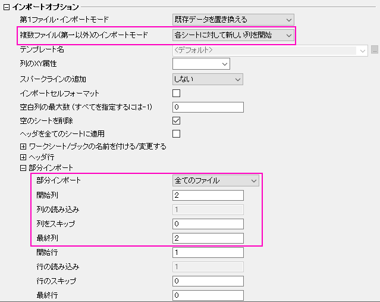

FAQ-437 異なるExcelシートからOriginの特定の列にインポートできますか？
Import-Certain-Column-Excel
最終更新日:2017/2/20
複数のExcelファイルがあり、単一の列（2列目など）をインポートして、Originの単一ワークシートに入力したい場合、複数ファイルインポートモードと部分インポートがあります。
- ファイル：インポート：EXCEL(XLS, XLSX, XLSM)...を選択して、複数のファイルを選択し、impMSExcel
ダイアログを開きます(Origin 2015および2016はimpExcel
ダイアログを使用していますが、同じです)。
- インポートオプションセクションにある複数ファイル（第一以外）インポートモードで、各シートに対して新しい列を開始を選択します。
- 部分インポートサブセクションにある部分インポートで全てのファイルを選択して、インポートしたい列を設定します。たとえば、開始列と最終列を両方とも2にすると、各Excelシートの2番目の列をOriginのワークシートにインポートします。
- OKをクリックして、インポートします。
- 
キーワード: Excel,
部分インポート, 複数ファイルインポート
必要なOriginのバージョン: Origin 2015 SR0以降